Analysis of Influenza Hemagglutinin from A/WSN/1933(H1N1)¶
Contents
- Analysis of Influenza Hemagglutinin from A/WSN/1933(H1N1)
- Overview
- Outline of the experiment
- HA numbering
- Analysis of deep-sequencing data
- Input files
- Software used
- Making alignments
- Parsing mutations
- Counting occurrences of mutations
- Inferring amino-acid preferences
- Computing correlations between replicates
- Calculating preference means
- Creating the sequence logo plot
- Mutational tolerance of antigenic and receptor-binding sites
- Comparison to NP
- Entropy-mapped structures
- Correlation with Wu et al
Overview¶
The overall strategy to analyze influenza hemagglutinin (HA) from A/WSN/1933(H1N1) is to mutagenize each position of the HA sequence to all possible amino acid variants and use deep-sequencing to decipher the amino acid preference at each position. This approach was initially described as “deep mutational scanning” by Fowler et al, and was subsequently adapted by the Bloom lab to influenza.
The experiments and analysis were done by Bargavi Thyagarajan in the Bloom lab. Illumina deep-sequencing yields HA nucleotide sequence reads as FASTQ files. These are assembled and analyzed using the mapmuts package. The analysis can be replicated by downloading the mapmuts repository on GitHub, downloading the Illumina FASTQ files to the ./examples/WSN_HA_2014Analysis/FASTQ_files subdirectory and running the Python script pipeline.py in the the directory ./examples/WSN_HA_2014Analysis/ with the command:
python pipeline.py
The ./examples/WSN_HA_2014Analysis/ subdirectory of the mapmuts package already contains many of the results of this analysis, but many of the larger files are excluded due to file-size limitations. The raw FASTQ files are available on the SRA at accession SRP040983.
Outline of the experiment¶
In this experiment, each position of the WSN-HA coding sequence is mutated to specify all possible amino acids creating a pool of mutated HA sequences. To identify HA mutations that are tolerated during viral growth, this plasmid pool is used in tissue-culture to grow A/WSN/33 viruses with mutated HA using the reverse genetics system. The HA mutant virus pool is then passaged through cells once at a low multiplicity of infection (MOI of 0.1). The low MOI ensures that not more than one virus infects a given cell in the intial round of infection. This avoids a mismatch between the packaged vRNA and HA protein species expressed on the surface of the viruses produced from the cell (genotype-phenotype mismatch).
Comparing HA sequences from mutant virus pools (mutvirus sample) to HA sequences in the mutated plasmid pool (mutDNA sample) by 50-bp, paired end, Illumina sequencing yields information on the amino acids preferred at each position of WSN-HA when subjected to viral growth selection.
In addition, as a control to decipher baseline error rates during viral growth, sample processing and deep-sequencing, unmutated WSN-HA plasmid (DNA sample) is used to grow wild-type A/WSN/33 virus (virus sample) and included in the deep-sequencing analysis.
Thus, the samples used for Illumina deep-sequencing are:
- DNA : Made by low-cycle number PCR amplification of wild-type WSN-HA. Measure of error-rate in deep-sequencing.
- mutDNA : Made by low-cycle number PCR amplification of HA from mutant HA plasmid pool. Measure of mutations in the mutant HA plasmid pool.
- virus : Made by reverse-transcription of vRNA from wild-type A/WSN/33 virus, followed by PCR amplification of cDNA. Measure of error-rate during viral growth and reverse-transcription.
- mutvirus : Made by reverse-transcription of vRNA from mutant virus pool, followed by PCR amplification of cDNA.Measure of mutations that are tolerated during viral growth selection.
Three biological replicates of each sample are made starting from independent wild-type and mutant HA plasmid pools. A fourth technical repeat consists of samples processed independently for deep-sequencing (starting from tagmentation). The samples for each replicate are multiplexed with Nextera primers for deep-sequencing and each replicate was run on a separate Illumina sequencing lane. Thus, the replicates used for Illumina deep-sequencing are:
- #1 (or replicate 1) : DNA, mutDNA, virus and mutvirus samples made from one WSN-HA plasmid preparation.
- #2 (or replicate 2) : DNA, mutDNA, virus and mutvirus samples made from another WSN-HA plasmid preparation.
- #3 (or replicate 3) : DNA, mutDNA, virus and mutvirus samples made from a third WSN-HA plasmid preparation.
- #1 repeat (or replicate 1 repeat) : DNA, mutDNA, virus and mutvirus samples from replicate 1 independently processed for deep-sequencing.
HA numbering¶
Multiple schemes for numbering the influenza HA are in use. For most of the results generated here, the WSN HA is simply numbered sequentially in 1, 2, ... numbering starting with the N-terminal Met. In the literature, HA is commonly numbered in the H3 numbering scheme (for example, as in PDB 4HMG). In certain cases as indicated, residues are numbered in this scheme. See HA_numbering for a program to interconvert among these schemes.
Analysis of deep-sequencing data¶
Illumina deep-sequencing yields HA nucleotide sequence reads as FASTQ files. These data must be analyzed to determine the changes in mutation frequency upon selection.
The analysis of these data can be replicated by downloading the mapmuts package on GitHub and going to the subdirectory ./examples/WSN_HA_2014Analysis/FASTQ_files, downloading the FASTQ files as described under Input files, and making sure that you have all of the relevant software as described in Software used. You can then replicate the entire analysis with the Python script pipeline.py with the command:
python pipeline.py
The exception is the steps in Entropy-mapped structures, which require some manual manipulations.
Input files¶
Input files needed for the analysis.
pipeline.py is a Python script that will run the entire analysis.
./FASTQ_files is a subdirectory within ./examples/WSN_HA_2014Analysis/ with the Illumina gzipped FASTQ sequence files for all the samples and replicates. The ./FASTQ_files directory contains subdirectories for each replicate (for example, ./FASTQ_files/replicate_1/). Each sample within a replicate then has a separate subdirectory (for example, ./FASTQ_files/replicate_1/DNA) within which the read 1 (has R1 in the filename) and read 2 (has R2 in the filename) gzipped FASTQ files are deposited. The Python script used for this analysis looks for files with the following naming format:
./FASTQ_files/replicate_1/DNA/*R1*.gz ./FASTQ_files/replicate_1/DNA/*R2*.gzBecause of the large size of these files, they are not distributed on GitHub. You will need to download them from the SRA at accession SRP040983.
R1_trim3.fasta and R2_trim3.fasta are files with the Nextera adaptor sequences found at the 3’end of the read 1 and read 2 sequence reads, respectively. The sequences are the reverse compliment of Nextera transposase/adaptor sequences for each read (shown below):
R1_trim sequence: CTGTCTCTTATACACATCTCCGAGCCCACGAGAC R2_trim sequence: CTGTCTCTTATACACATCTGACGCTGCCGACGAWSN-HA-amplicon.txt is the file with the WSN-HA amplicon sequence to which the reads are aligned. The sequences of the primers used to PCR amplify WSN-HA are included. The coding sequence of HA is in upper-case letters.
./PDB_structure/ : subdirectory containing the results of analyzing the crystal structure of HA. Specific input files in this directory:
- 1RVX.pdb is the crystal structure 1RVX (downloaded from the Protein Data Bank) of the HA from A/PR/8/1934 (H1N1). This is the crystallized HA closest in identity to the WSN HA.
- 1RVX_trimer.pdb is a version of 1RVX.pdb that has been manually edited to contain only one trimer (chains A through F). The original 1RVX.pdb contains two trimers in the asymmetric unit.
- 1RVX_trimer_renumbered.pdb is a version of 1RVX_trimer.pdb that has been renumbered with PDB Goodies and manual touch-up o that the numbering matches sequential 1, 2, ... numbering of the WSN HA sequence. The HA1 and HA2 chains have been merged into single chains (A, B, and C) and these chains are now numbered so that residue r corresponds to residue r in sequential numbering of the WSN HA sequence. Overall, this renumbered PDB contains 483 residues in each of the three HA chains, of which 438 are exact matches with the corresponding position in the WSN HA protein.
- 1RVX_trimer_renumbered.dssp is a text file containing the results of running the DSSP webserver on 1RVX_trimer_renumbered.pdb to determine the secondary structure and solvent accessibility of residues. The residues in this file match sequential 1, 2, ... numbering of the WSN HA protein sequence.
- sequential_to_H3.txt is a file that converts between the sequential 1, 2, ... numbering of the WSN HA and the H3 numbering scheme as used in PDB 4HMG. This conversion was done using HA_numbering. The file contains comma-separated lines with the first entry giving the sequential number and the second giving the H3 number. For the H3 number, numbers alone indicate the HA1 chain and numbers followed by HA2 indicate the HA2 chain.
Caton_H1_HA_antigenic_sites.txt is a text file that defines the antigenic sites in HA, based on the analysis originally done by Caton et al 1982. See the text file itself for detailed information.
receptor_binding_residues.txt is a text file that defines the conserved receptor binding sites for the HA, based largely on the analysis done originally by Martin et al 1998. See the text file itself for detailed information. Note that these are not all receptor-binding residues, but rather all conserved receptor-binding residues as explained within the receptor_binding_residues.txt file.
entropy_label_PDB.py is a Python script that uses PyMOL to label the crystal structure.
assess_aa_completeness.py is a Python script that estimates the completenes with which amino-acid mutations were sampled from knowledge of the sampling of codon mutations.
get_PDB_contacts.py is a Python script that defines contacting residues.
get_sites_near_Caton_sites.py is a Python script that defines the sites that are near Caton et al 1982 antigenic sites and are solvent exposed.
get_RBS.py is a Python script that is used to create the file allRBS_residues.txt. This must be done manually using PyMOL. Briefly, the created allRBS_residues.txt file contains all residues that have any atom within 5.0 angstroms of the receptor bound in the 1RVX PDB structure. To create allRBS_residues.txt, open PyMOL and then run the following command within PyMOL:
run get_RBS.pyThe ./NP_stuff/ contains files related to the comparative analysis with influenza nucleoprotein. Specifically, it contains the following files:
- NP_CTL_epitope_sitecounts.csv is a list of the CTL epitopes per site in NP. This is Table S1 from Gong and Bloom 2014. See that reference for a detailed description of how the CTL epitopes were defined.
- NP_amino_acid_preferences.txt are the experimentally determined site-specific amino-acid preferences for NP. This is Supplementary file S1 from An experimentally determined evolutionary model dramatically improves phylogenetic fit.
- 2IQH_monomerC.dssp is the analysis of the solvent exposure and secondary structure of the NP crystal structure using the DSSP webserver described in An experimentally determined evolutionary model dramatically improves phylogenetic fit (this paper provides links to the source code and data that contain this file).
Wu_et_al_Table_S1.csv is a file containing the data in Table S1 of Wu et al 2014. This is the “relative fitness” values of about 20% of the possible mutations to HA.
correlate_with_Wu_data.py is a Python script that correlates the data in Wu_et_al_Table_S1.csv with the site-specific amino-acid preferences inferred during the analysis described here (see Correlation with Wu et al).
Software used¶
This analysis was performed using the following software on the Fred Hutchinson computer cluster using the following Linux distribution:
Linux version 3.5.0-43-generic (buildd@roseapple) (gcc version 4.6.3 (Ubuntu/Linaro 4.6.3-1ubuntu5) ) #66~precise1-Ubuntu SMP Thu Oct 24 14:52:23 UTC 2013
In order to replicate the analysis, you will also need to use Linux or Mac OS X, and install the following software.
The specific software versions used for the analysis are specified. You can probably also use other software versions in many cases, but this has not been confirmed.
- mapmuts : specifically, mapmuts version 1.01
- Python version 2.7.3
- numpy version 1.6.1
- matplotlib version 1.3.1
- pymc version 2.3
- scipy version 0.9.0
- pyPdf version 1.13
- pdflatex version 3.1415926-1.40.10-2.2
- weblogo version 3.3
- ImageMagick convert 6.6.9-7 2012-08-17
- sbatch (version 2.6.2) was used by the run_mapmuts.py script to submit the jobs on a computer cluster.
- rpy2 version 2.3.9
- R statistical package, version 3.0.3
- PyMOL to create an image of the structure.
Making alignments¶
The deep-sequencing reads are aligned to the WSN-HA sequence using the mapmuts script mapmuts_makealignments.py (see the mapmuts documentation). The pipeline.py script creates an input file (makealignments_infile.txt) for each sample within subdirectories specifying the replicate and sample (for example, ./replicate_1/DNA). The infile specifies the following criteria:
gzipped True
applyfilter True
minq 25
maxn 2
minoverlap 30
maxrm 1
maxa1m 1
maxa2m 1
maxgenem 6
upcase test
The output files are deposited within the subdirectory for each sample. The output is described in more detail in the mapmuts documentation and includes the following files in each replicate and sample subdirectory:
*_alignments.txt.gz
*_unaligned.fasta.gz
*_alignmentstatistics.txt
*_alignmentstatistics.pdf
*_insertlengths.txt
*_insertlengths.pdf
*_R1mismatches.txt
*_R1mismatches.pdf
*_R2mismatches.txt
*_R2mismatches.pdf
*_makealignments_summary.pdf
*_makealignments_log.txt
The mapmuts script mapmuts_alignmentsummaryplot.py creates a summary of the number of aligned reads for all samples in each replicate. Here is this plot, it shows a large number of overlapping paired-end reads for all samples.
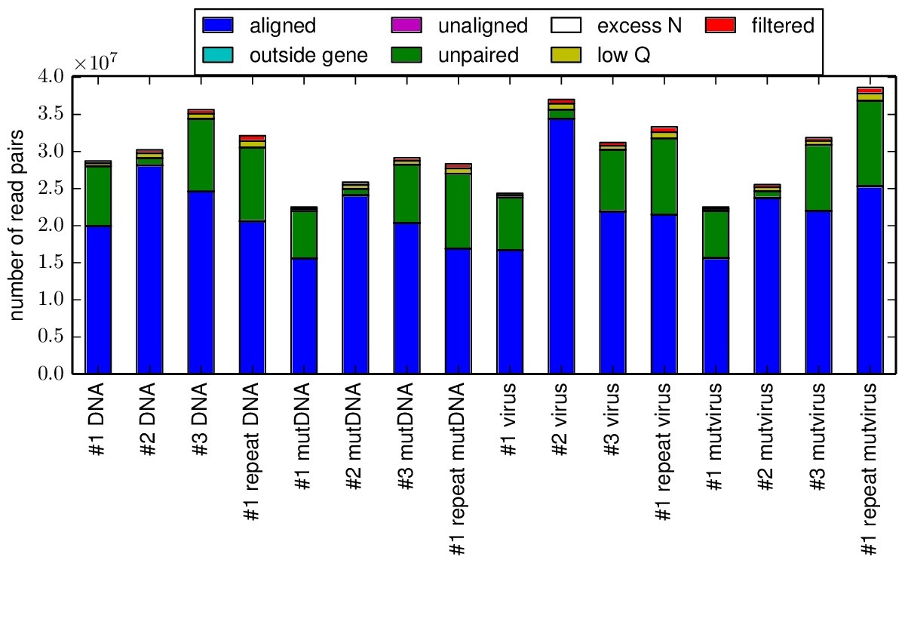The alignmentsummaryplot.pdf summarizing the depth of overlapping paired-end reads for each sample.
{kind=link}
Parsing mutations¶
The mapmuts script mapmuts_parsecounts.py (see mapmuts documentation) uses the alignments to parse counts of different types of mutations - synonymous/non-synonymous, single/double nucleotide changes etc. across each position in the HA coding sequence. The pipeline.py script creates an input file (parsecounts_infile.txt) for each sample within the existing subdirectories specifying the replicate and sample (for example, ./replicate_1/DNA). The following output files are created:
*_ntcounts.txt
*_codoncounts.txt
*_aacounts.txt
*_codondepth.pdf
*_syn-ns-dist.pdf
*_nmutspercodon-dist.pdf
*_parsesummary.pdf
*_parsecounts_log.txt
Below is an example of one of the files showing the read depth across the sequence. The read depth is not entirely uniform due to biases in fragmentation, but all sites have a large number of reads.
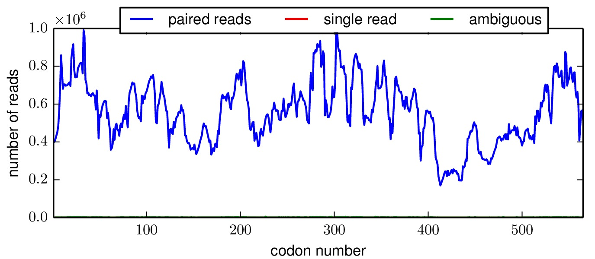The *_codondepth.pdf plot for replicate 3, DNA.
{kind=link}
The mapmuts script mapmuts_parsesummaryplots.py summarizes the output from the parsed counts and creates a plot with the fraction of different types of mutations in each sample in all the replicates. The following output files are created:
parsesummary_ntfracs.pdf
parsesummary_codontypes.pdf
parsesummary_codonmuts.pdf
parsesummary_codon_types_and_nmuts.pdf
Below is the key plot. It shows a relatively low background error rate, and selection against stop codon and nonsynonymous mutations in the mutant viruses relative to the mutant DNA.
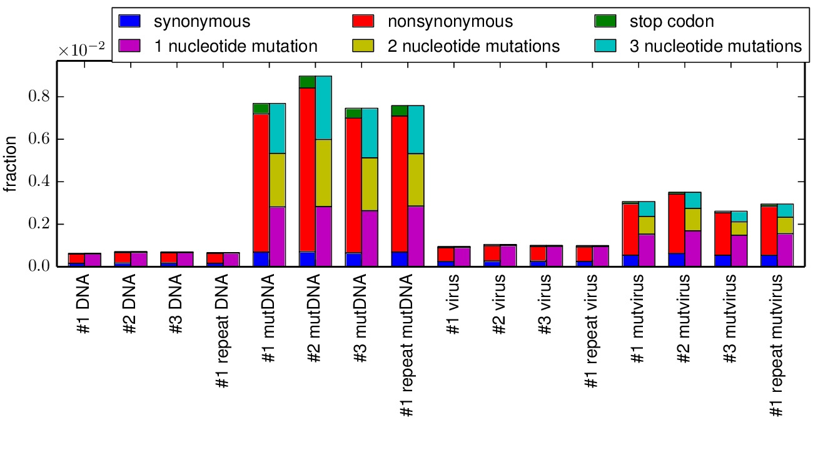The parsesummary_codon_types_and_nmuts.pdf plot.
{kind=link}
Counting occurrences of mutations¶
The mapmuts script mapmuts_countparsedmuts.py is used to summarize the number of times different types of mutations occur in various samples (DNA, mutDNA etc.) both for the biological replicates individually, and after including data from all biological replicates (#1, #2 and #3). The script calculates the fraction of mutations that occur a certain number of times. The types of mutations analyzed includes all codon mutations, all codon mutations that involve more than one nucleotide change per codon, all synonymous mutations and all synonymous mutations that involve more than one nucleotide change per codon. The following output files are created:
*_multi-nt-allcodonmutcounts.txt
*_allcodonmutcounts.txt
*_syncodonmutcounts.txt
*_multi-nt-syncodonmutcounts.txt
*_multi-nt-codonmutcounts.pdf
*_codonmutcounts.pdf
Below are files showing the occurrences of multi-nucleotide codon mutations. This first plot is for the combined data for all three biological replicates.
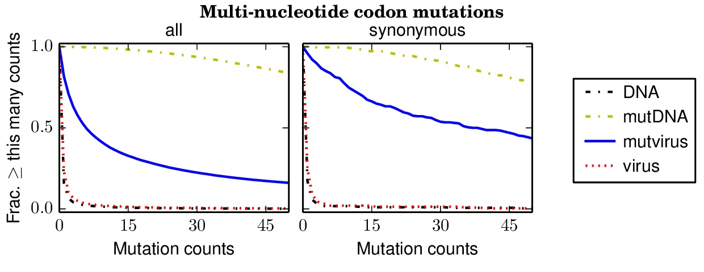The countparsedmuts_multi-nt-codonmutcounts.pdf file shows the occurrence of mutations in the three biological replicates combined. Nearly all mutations are sampled in the mutated DNA, and a high fraction are sampled in the mutant viruses.
{kind=link}
Specifically, the above plot show that 85% of synonymous multi-nucleotide codon mutations are sampled at least five times in the combined libraries. The script assess_aa_completeness.py determines the fraction of amino acids that have at least one codon sampled at least five times given the structure of the genetic code. It turns out that 97% of amino acids are expected to have at least one codon sampled at least five times when 85% of codons are sampled.
The next plots show the replicates individually. None of the individual replicates are as comprehensive as the three biological replicates combined.
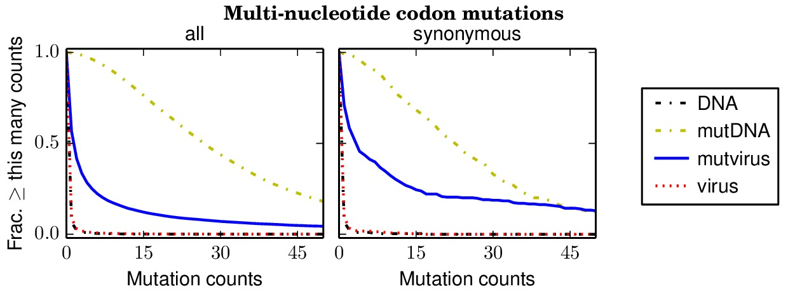The replicate_1/countparsedmuts_multi-nt-codonmutcounts.pdf file shows the occurrence of mutations in replicate 1 alone.
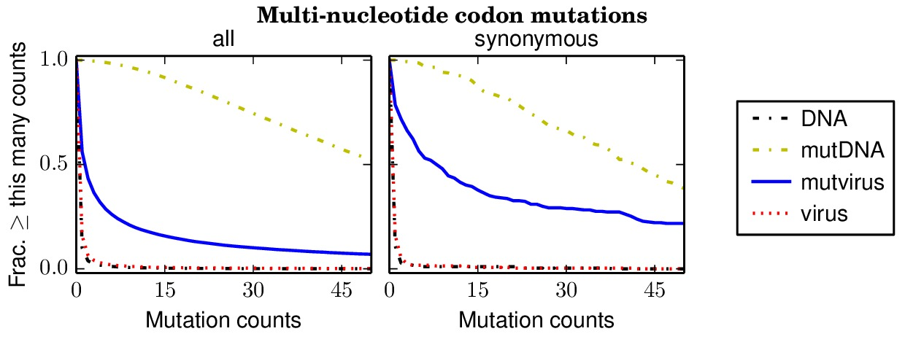The replicate_2/countparsedmuts_multi-nt-codonmutcounts.pdf file shows the occurrence of mutations in replicate 2 alone.
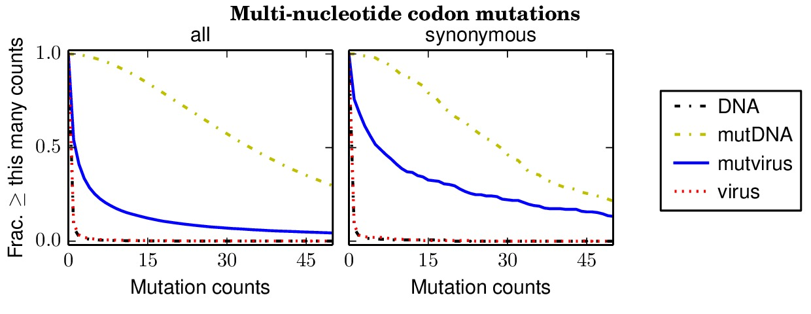The replicate_3/countparsedmuts_multi-nt-codonmutcounts.pdf file shows the occurrence of mutations in replicate 3 alone.
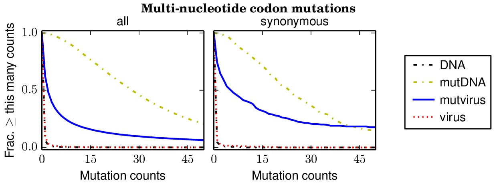The replicate_1_repeat/countparsedmuts_multi-nt-codonmutcounts.pdf file shows the occurrence of mutations in replicate 1 repeat.
{kind=link}
{kind=link}
{kind=link}
{kind=link}
Inferring amino-acid preferences¶
The amino-acid preferences for each position of the HA coding sequence is deduced by the mapmuts script mapmuts_inferpreferences.py. The script uses an inference algorithm to calculate the amino acid preferences at each position while accounting for mutations in HA sequence arising due to viral growth, sample preparation steps such as reverse-transcription and deep-sequencing errors. A more detailed description of the inference algorithm can be found in the mapmuts documentation. The pipeline.py script creates an input file for each replicate (for example, replicate_1_equilibriumpreferences_infile.txt) within the existing subdirectory for the replicate (for example, ./replicate_1/). The script also creates subdirectories named MCMC_traces and preference_plots within each replicate directory and deposits the MCMC trace plots and preference plots for individual amino acids. The infile specifies the following criteria:
mu_concentration 1.0
MCMC_traces MCMC_traces
preference_plots preference_plots
stepincrease 4
seed 1
convergence 0.01
ncpus 12
nruns 3
pi_concentration 1.0
removeoutlier False
rho_concentration 1.0
epsilon_concentration 1.0
minvalue 1e-7
thin 200
nsteps 200000
sites 2 565
The following output files are created:
*_equilibriumpreferences.txt
*_equilibriumpreferences_credibleintervals_95.txt
preference_plots/replicate_*_residue_*.pdf
MCMC_traces/replicate_*_residue_*.pdf
*_inferpreferences_log.txt (to track the output of this script)
The key file is the *_equilibriumpreferences.txt file, which lists the inferred amino-acid preferences.
Computing correlations between replicates¶
The mapmuts script mapmuts_preferencescorrelate.py uses the computed amino acid preferences and creates plots to compare preferences for all amino acids across different replicates. The pipeline.py script creates a subdirectory ./correlations and an input file for each pair-wise comparison (for example preferencescorrelate_replicate_1_vs_replicate_2_infile.txt). The output files are the plots comparing the preferences between replicates.
Below are the key correlation plots. They show a significant but imperfect correlation between the preferences from biological replicates. The correlation between the technical repeats of replicate 1 is very high. Therefore, variation comes from the biological process of viral growth rather than from technical sources such as sequencing errors.
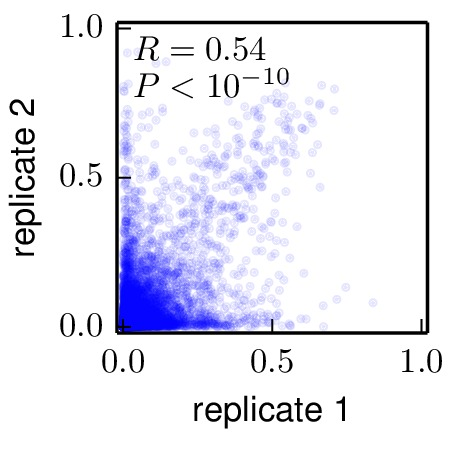Moderate correlation between biological replicates 1 and 2 (./correlations/replicate_1_vs_replicate_2.jpg).
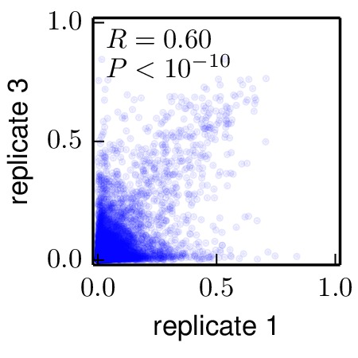Moderate correlation between biological replicates 1 and 3 (./correlations/replicate_1_vs_replicate_3.jpg).
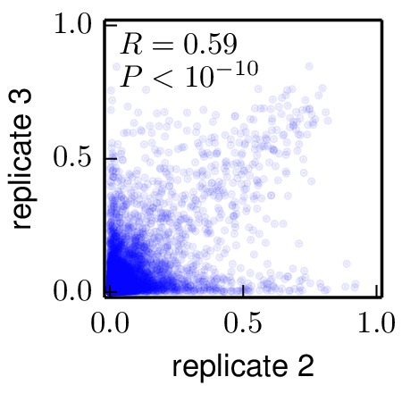Moderate correlation between biological replicates 2 and 3 (./correlations/replicate_2_vs_replicate_3.jpg).
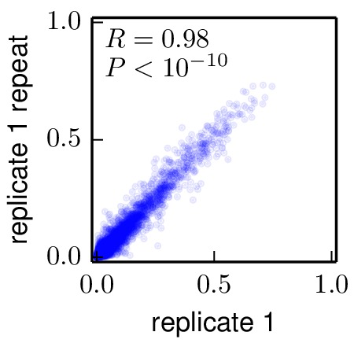Strong correlation between biological replicates 1 and the technical repeat of replicate 1 (./correlations/replicate_1_vs_replicate_1_repeat.jpg).
{kind=link}
{kind=link}
{kind=link}
{kind=link}
Calculating preference means¶
The mapmuts script mapmuts_preferencemeans.py calculates the mean animo acid preferences at each position of HA inferred from the preferences computed for each biological replicate. The pipeline.py script creates an infile preferencemeans_infile.txt and the output file average_equilibriumpreferences.txt with the mean preferences for each position and entropy values.
The amino-acid preferences in this average_equilibriumpreferences.txt file should be the best estimate of the true preferences, as they average the results of the three biological replicates.
Creating the sequence logo plot¶
The mapmuts script mapmuts_siteprofileplots.py uses the mean amino acid preferences (average_equilibriumpreferences.txt) calculated for each position on HA to create a sequence logo plot. Additional information about the relative solvent accessibility of HA derived from the input text file 1RVX_trimer_renumbered.dssp in the ./PDB_structure/ subdirectory (see Input files) is overlaid as bars on top of the sequence information in the logo plot. Also overlaid is the identity of antigenic sites and receptor-binding residues taken from Caton_H1_HA_antigenic_sites.txt and receptor_binding_residues.txt (see Input files).
The pipeline.py script creates two sequence logo plots as outputs with the same preference mean information differing in the amino acid position numbering - following the H3 numbering or sequential numbering (the first amino acid residue of WSN-HA is position 1) (see HA numbering).
Below are these plots:
The sequentialnumbering_site_preferences_logoplot.pdf file, showing the preferences with sequential numbering of the HA..
The H3numbering_site_preferences_logoplot.pdf file, showing the preferences with H3 numbering of the HA..
{kind=link}
{kind=link}
Mutational tolerance of antigenic and receptor-binding sites¶
The results shown in the previous section summarize the inherent mutational tolerance of different sites in influenza. It is well known that sites with higher solvent accessibility are more mutationally tolerant. It is interesting to ask if residues in antigenic sites and receptor-binding sites (as defined in Caton_H1_HA_antigenic_sites.txt and receptor_binding_sites.txt as described in Input files) have especially high or low mutational tolerance after controlling for RSA (relative solvent accessibility). For example, it seems likely that conserved receptor-binding sites will have low mutational tolerance due to functional constraints. It is also possible that antigenic sites will have high mutational tolerance if evolvability of antigenic sites is a factor that contributes to influenza immune escape.
A possible confounding factor when examining the mutational tolerance of the antigenic sites defined by Caton et al 1982 is that these sites were defined in part by being the location of escape mutations during monoclonal antibody escape – they therefore might be more tolerant of mutations simply because they are close to other sites. In order to assess this, we also defined all sites that are near known antigenic sites and are solvent exposed. This definition should include sites near antigenic sites that were not selected by Caton et al 1982 and could in principle have low mutational tolerance. Specifically, these sites were defined as any sites that have a alpha-carbon to alpha-carbon distance of less than or equal to 6 angstroms from a Caton et al 1982 antigenic site and also have a relative solvent accessibility of at least 0.2. These sites must be defined manually (this is not done by the pipeline.py script) using the following two steps:
Define all HA1 sites in contact (within 6 angstroms CA-CA distance) with other HA1 sites by opening PyMOL and running the command:
run get_PDB_contacts.pyThis command creates the file PDB_structure/contacting_residues.txt, which defines all residues that contact other residues in the same HA1 monomer.
Use the definitions in the created PDB_structure/contacting_residues.txt file and the solvent accessibilities within the file PDB_structure/1RVX_trimer_renumbered.dssp to define all sites with relative solvent accessibility (RSA) of at least 0.2 that contact an antigenic site. This is done by running at the command line:
python get_sites_near_Caton_sites.pyThis creates the file nearby_antigenic_sites.txt which lists (in 1, 2, ... numbering) all antigenic sites in Caton_H1_HA_antigenic_sites.txt plus all their contacting sites.
An analysis to examine the mutational tolerance of these subsets of sites is done by the mapmuts script mapmuts_entropycomparison.py (described in the mapmuts documentation). The plots are below, as are the results of multiple linear regression analyses performed by R to test for statistical associations. The analysis is limited to residues in the HA1 chain since all antigenic and receptor-binding residues are in this chain.
The following plots summarize the results graphically:
{kind=link}
The antigenic_entropy_rsa_correlation.pdf file shows the site entropy (in bits) and RSA for residues in antigenic sites (red triangles) and all other residues in the HA1 chain (blue circles). Qualitatively, antigenic-site residues appear to be more mutationally tolerant (higher site entropy).
{kind=link}
The nearby_antigenic_entropy_rsa_correlation.pdf file shows the site entropy (in bits) and RSA for residues in antigenic sites or in contact with antigenic sites (red triangles) and all other residues in the HA1 chain (blue circles). Qualitatively, antigenic-site residues and their nearby neighbors appear to be more mutationally tolerant (higher site entropy).
{kind=link}
The receptor_binding_entropy_rsa_correlation.pdf file shows the site entropy (in bits) and RSA for residues in conserved receptor-binding sites (red triangles) and all other residues in the HA1 chain (blue circles). Qualitatively, receptor-binding residues appear to be less mutationally tolerant (lower site entropy).
{kind=link}
The allRBS_entropy_rsa_correlation.pdf file shows the site entropy (in bits) and RSA for all residues in receptor-binding sites, including non-conserved sites, (red triangles) and all other residues in the HA1 chain (blue circles).
To statistically test whether the selected sites differ in site entropy, mapmuts_entropycomparison.py uses linear regression. The results for the antigenic sites are in antigenic_linearmodelresults.txt, which is included below:
Residuals:
Min 1Q Median 3Q Max
-1.45241 -0.27611 -0.01408 0.34896 0.96557
Coefficients:
Estimate Std. Error t value Pr(>|t|)
(Intercept) 2.88267 0.03388 85.090 < 2e-16 ***
RSA 1.29333 0.11903 10.866 < 2e-16 ***
selected 0.29549 0.09276 3.186 0.00158 **
---
Signif. codes: 0 ‘***’ 0.001 ‘**’ 0.01 ‘*’ 0.05 ‘.’ 0.1 ‘ ’ 1
Residual standard error: 0.4563 on 341 degrees of freedom
Multiple R-squared: 0.3238, Adjusted R-squared: 0.3198
F-statistic: 81.65 on 2 and 341 DF, p-value: < 2.2e-16
These results show that being in antigenic site is significantly correlated with higher mutational tolerance after controlling for RSA.
The results for the antigenic sites and their nearby neighbors are in receptor-binding sites are in nearby_antigenic_linearmodelresults.txt, which is included below:
Residuals:
Min 1Q Median 3Q Max
-1.3990 -0.2727 0.0033 0.3408 0.9801
Coefficients:
Estimate Std. Error t value Pr(>|t|)
(Intercept) 2.88423 0.03390 85.069 < 2e-16 ***
RSA 1.22043 0.12871 9.482 < 2e-16 ***
selected 0.23110 0.07496 3.083 0.00221 **
---
Signif. codes: 0 ‘***’ 0.001 ‘**’ 0.01 ‘*’ 0.05 ‘.’ 0.1 ‘ ’ 1
Residual standard error: 0.4568 on 341 degrees of freedom
Multiple R-squared: 0.3226, Adjusted R-squared: 0.3186
F-statistic: 81.19 on 2 and 341 DF, p-value: < 2.2e-16
These results show that being in antigenic site or nearby an antigenic site is significantly correlated with higher mutational tolerance after controlling for RSA.
The results for the conserved receptor-binding sites are in receptor_binding_linearmodelresults.txt, which is included below:
Residuals:
Min 1Q Median 3Q Max
-1.5372 -0.2730 -0.0004 0.3656 0.9273
Coefficients:
Estimate Std. Error t value Pr(>|t|)
(Intercept) 2.90170 0.03432 84.543 < 2e-16 ***
RSA 1.38063 0.11395 12.116 < 2e-16 ***
selected -0.51606 0.16371 -3.152 0.00176 **
---
Signif. codes: 0 ‘***’ 0.001 ‘**’ 0.01 ‘*’ 0.05 ‘.’ 0.1 ‘ ’ 1
Residual standard error: 0.4565 on 341 degrees of freedom
Multiple R-squared: 0.3234, Adjusted R-squared: 0.3194
F-statistic: 81.5 on 2 and 341 DF, p-value: < 2.2e-16
These results show that being in a conserved receptor-binding site is significantly correlated with lower mutational tolerance after controlling for RSA.
The results for all (not just conserved) receptor-binding sites are in allRBS_linearmodelresults.txt, which is included below:
Residuals:
Min 1Q Median 3Q Max
-1.54556 -0.27443 -0.02212 0.36633 0.93024
Coefficients:
Estimate Std. Error t value Pr(>|t|)
(Intercept) 2.89410 0.03482 83.111 <2e-16 ***
RSA 1.40180 0.11495 12.195 <2e-16 ***
selected -0.17694 0.11483 -1.541 0.124
---
Signif. codes: 0 ‘***’ 0.001 ‘**’ 0.01 ‘*’ 0.05 ‘.’ 0.1 ‘ ’ 1
Residual standard error: 0.4615 on 341 degrees of freedom
Multiple R-squared: 0.3085, Adjusted R-squared: 0.3044
F-statistic: 76.07 on 2 and 341 DF, p-value: < 2.2e-16
These results show that being in any receptor-binding site is somewhat correlated with lower mutational tolerance after controlling for RSA, but that the difference is not significant.
Comparison to NP¶
The results in Mutational tolerance of antigenic and receptor-binding sites suggest that antigenic sites in hemagglutinin are especially tolerant of mutations. As a comparison data set, we used results from deep mutational scanning of NP described in An experimentally determined evolutionary model dramatically improves phylogenetic fit. Specifically, that paper allowed us to quantify the site entropy of every site in NP (in the file ./NP_stuff/NP_amino_acid_preferences.txt). Gong and Bloom 2014 mapped the number of CTL epitopes per site in NP (in the file ./NP_stuff/NP_CTL_epitope_sitecounts.csv). The average site in NP participates in 1.1 CTL epitopes. We therefore classified sites as being above average in their number of CTL epitopes if they participated in two or more epitopes – there are 114 such sites. We then asked whether these sites with at least two CTL epitopes had higher or lower site entropy than other sites. This analysis is all done by the pipeline.py script. Here are the results:
{kind=link}
The NP_CTL_entropy_rsa_correlation.pdf file shows the site entropy (in bits) and RSA for NP residues that participate in two or more CTL epitopes (red triangles) and all other sites (blue circles).
The linear regression results are in NP_CTL_linearmodelresults.txt, which is included below:
Residuals:
Min 1Q Median 3Q Max
-1.69674 -0.17194 0.07198 0.25956 0.71721
Coefficients:
Estimate Std. Error t value Pr(>|t|)
(Intercept) 3.44238 0.02858 120.436 <2e-16 ***
RSA -0.04749 0.07394 -0.642 0.521
selected -0.04156 0.04053 -1.026 0.306
---
Signif. codes: 0 ‘***’ 0.001 ‘**’ 0.01 ‘*’ 0.05 ‘.’ 0.1 ‘ ’ 1
Residual standard error: 0.3675 on 433 degrees of freedom
Multiple R-squared: 0.003341, Adjusted R-squared: -0.001263
F-statistic: 0.7257 on 2 and 433 DF, p-value: 0.4846
Overall, for NP there is no significant tendency for CTL epitope sites to have higher mutational tolerance. Therefore, while HA does have enhanced mutational tolerance in its antigenic sites, there is no enhanced mutational tolerance in NP antigenic sites.
Note also that unlike for HA, there is not a correlation between RSA and site entropy. This is probably because the folded structure of NP is an oligomer that wraps RNA, so even the surfaces are constrained by those functions.
Entropy-mapped structures¶
This step is manual, and is not done by the pipeline.py script. Do the following:
Open PyMOL in the main directory for this example.
Run the PyMOL script entropy_label_PDB.py from within PyMOL using the command:
run entropy_label_PDB.py
This will create five *.png files in the ./PDB_structure/ directory. For all of these images, one of the three HA monomers from the PR8 structure 1RVX is colored according to site entropies (calculated from the amino-acid preferences in average_equilibriumpreferences.txt) from blue (lowest entropy) to red (highest entropy). The other two HAmonomers are in gray. These images are shown below:
{kind=link}
entropy_colored_structure.png shows a surface rendering for all residues.
{kind=link}
conservedRBS_entropy_colored_structure.png shows the HA1 residues colored according to site entropy, with the conserved receptor-binding residues in spheres.
{kind=link}
allRBS_entropy_colored_structure.png shows the HA1 residues colored according to site entropy, with the all receptor-binding residues (within 5 angstroms of receptor) in spheres.
{kind=link}
antigenicsites_entropy_colored_structure.png shows the HA1 residues colored according to site entropy, with the Caton et al 1982 antigenic sites in spheres.
{kind=link}
nearantigenicsites_entropy_colored_structure.png shows the HA1 residues colored according to site entropy, with the antigenic sites (Caton et al 1982) and all other nearby residues (within 6 angstroms alpha-carbon distance) in spheres.
Correlation with Wu et al¶
Wu et al 2014 do a somewhat similar study, where they estimate the impact of many of the single-nucleotide mutations to the WSN HA. Their data is the in file Wu_et_al_Table_S1.csv. To compare their data to the overall inferred preferences (average_equilibriumpreferences.txt), the pipeline.py script runs another script with the command:
python correlate_with_Wu_data.py
This script first goes through the data of Wu et al 2014. They report a total of 3010 “relative fitness” values. After excluding values for mutations to stop codons or back to the wildtype residue, this is data for 2350 unique amino-acid mutations (out of \(19 \times 564 = 10716\) total possible mutations to non-start codons, so 22% of mutations are covered by Wu et al 2014).
In order to make the values comparable, the “relative fitness” values are normalized to the value for the wildtype at that residue, to give normalize relative fitness = (relative fitness mutant) / (relative fitness wildtype). This can be done for 2264 of the mutations (for the rest, there is no wildtype fitness for that residue. These are then compared the preference for that mutant residue normalized by the wildtype preference from our experiments, \(\pi_{r,a} / \pi_{r,\mbox{wt}}\).
Some of the mutations are reported to have relative fitness of zero by Wu et al 2014. Since such values cannot be plotted on a log scale, these zeros are assigned the minimum non-zero value from their entire data set.
The overall correlation (on a log-log plot) is shown in the following generated plot:
{kind=link}
correlation_with_Wu_et_al.pdf shows that there is a substantial correlation between the inferences from the current study and that by Wu et al 2014. Note that Wu et al 2014 do not perform replicates of their experiment, so we do not know how well correlated their reported results would be with another replicate of their same experiment.